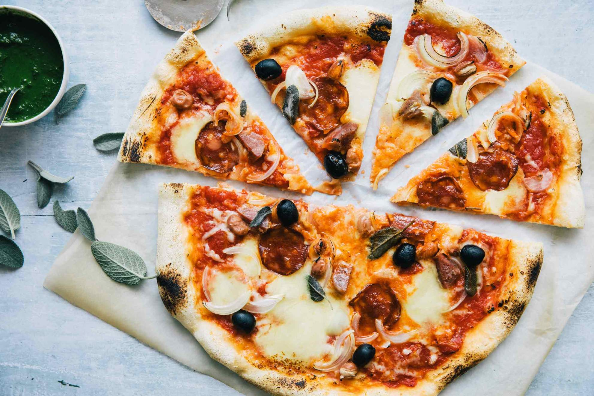
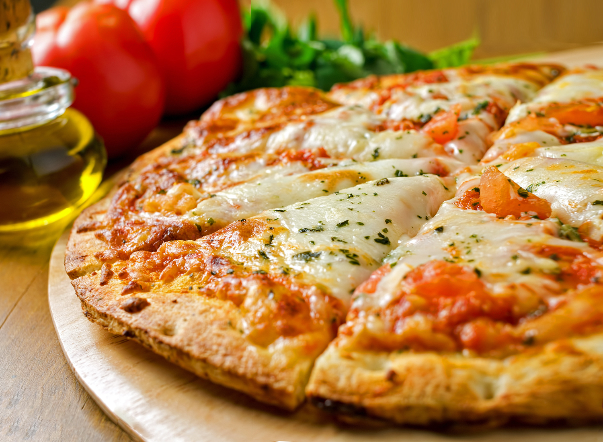

Vítejte v pizzerii Dam0k, kde jsme hrdí na to, že vám můžeme nabídnout tu nejchutnější a nejsytější pizzu ve městě! Jsme rodinný podnik s vášní pro tvorbu dokonalé pizzy, který používá pouze ty nejčerstvější suroviny a tradiční postupy.
Náš příběh začal jednoduchým snem: podělit se o lásku k pizze se světem. Začali jsme v malém, jen s několika recepty a závazkem ke kvalitě, ale během let jsme se rozrostli v oblíbenou místní instituci. Dnes naše nabídka zahrnuje širokou škálu klasických i kreativních pizzových příloh, stejně jako saláty, přílohy a dezerty, které doplní vaše jídlo.
V Dam0k Pizza věříme, že pizza by měla být pastvou pro smysly. Proto k výrobě naší charakteristické kůrky, pikantní omáčky a pikantních náplní používáme jen ty nejlepší a nejčerstvější suroviny. Ať už máte chuť na klasickou Margheritu, nebo na něco odvážnějšího, jako je naše oblíbená pizza se slaninou a vejcem, můžete se spolehnout, že každé sousto bude plné chuti.
Našim zákazníkům se snažíme poskytovat služby té nejvyšší kvality, ať už se stravujete v restauraci, odnášíte si ji ven nebo si objednáte rozvoz. Náš přátelský personál vám vždy rád zodpoví všechny vaše dotazy a pomůže vám najít tu pravou pizzu pro vaše chuťové pohárky.
Děkujeme, že jste si pro své příští jídlo vybrali pizzu Dam0k. Těšíme se, že vás budeme moci brzy obsloužit!
